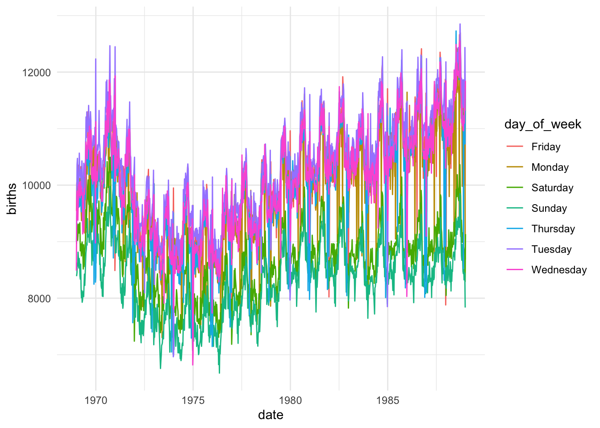
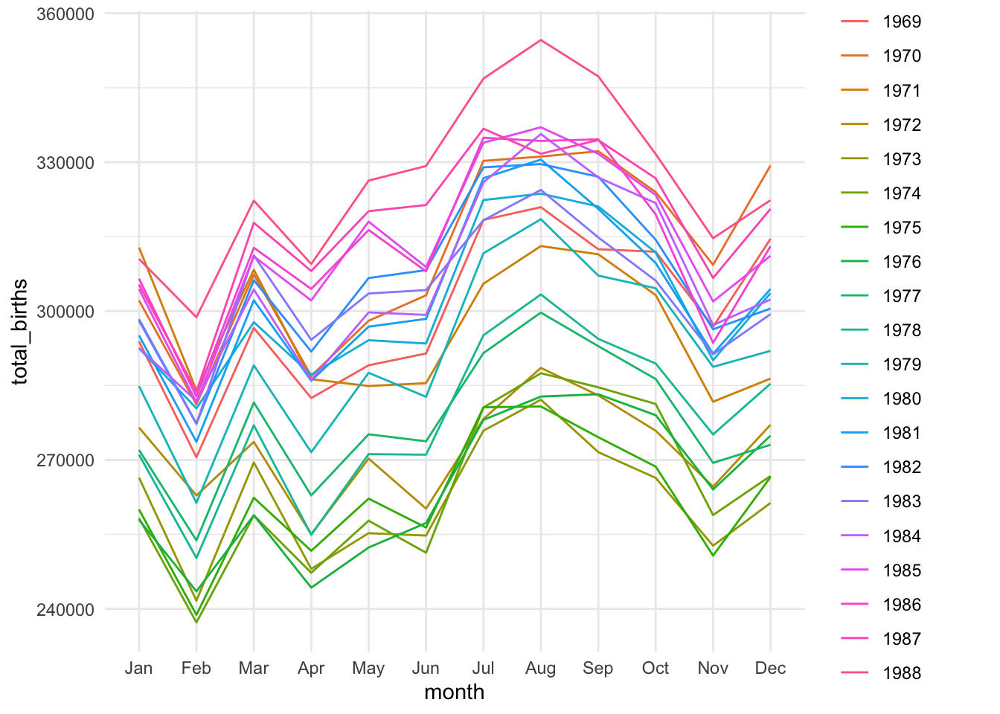
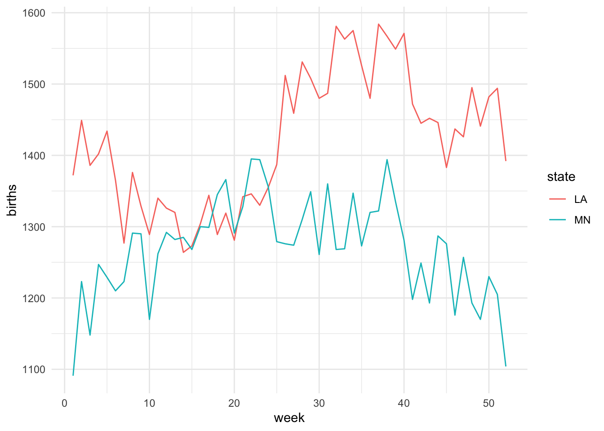

Below is the visual representation of the data science process we saw earlier. Which stage are we in currently?
Recall that wrangling is important. It is much of what we spend our efforts on in Data Science. There are lots of steps, hence R functions, that can go into data wrangling. But we can get far with the following 6 wrangling verbs:
verb
action
arrange
arrange the rows according to some column
filter
filter out or obtain a subset of the rows
select
select a subset of columns
mutate
mutate or create a column
summarize
calculate a numerical summary of a column
group_by
group the rows by a specified column
Example 1: Single Verb
Let’s start by working with some TidyTuesday data on penguins. This data includes information about penguins’ flippers (“arms”) and bills (“mouths” or “beaks”). Let’s import this using read_csv(), a function in the tidyverse package. For the most part, this is similar to read.csv(), though read_csv() can be more efficient at importing large datasets.
library(tidyverse)penguins <-read_csv('https://raw.githubusercontent.com/rfordatascience/tidytuesday/master/data/2020/2020-07-28/penguins.csv')# Check it outhead(penguins)
# A tibble: 6 × 8
species island bill_length_mm bill_depth_mm flipper_length_mm body_mass_g
<chr> <chr> <dbl> <dbl> <dbl> <dbl>
1 Adelie Torgersen 39.1 18.7 181 3750
2 Adelie Torgersen 39.5 17.4 186 3800
3 Adelie Torgersen 40.3 18 195 3250
4 Adelie Torgersen NA NA NA NA
5 Adelie Torgersen 36.7 19.3 193 3450
6 Adelie Torgersen 39.3 20.6 190 3650
# ℹ 2 more variables: sex <chr>, year <dbl>
Check Understanding
Construct a plot that allows us to examine how the relationship between body mass and bill length varies by species and sex.
Check Understanding
Use the 6 wrangling verbs to address each task in the code chunk below. You can tack on |> head() to print out just 6 rows to keep your rendered document manageable. Most of these require just 1 verb.
# Get data on only Adelie penguins that weigh more than 4700g# Get data on penguin body mass only# Show just the first 6 rows# Sort the penguins from smallest to largest body mass# Show just the first 6 rows# Calculate the average body mass across all penguins# Note: na.rm = TRUE removes the NAs from the calculation# Calculate the average body mass by species# Create a new column that records body mass in kilograms, not grams# NOTE: there are 1000 g in 1 kg# Show just the first 6 rows
Check Understanding
How many penguins of each species do we have? Create a viz that addresses this question.
ggplot(penguins, aes(x = species))
Check Understanding
Can we use the 6 verbs to calculate exactly how many penguins in each species?
HINT: n() calculates group size.
count verb
The count() verb provides a handy shortcut!
penguins |>count(species)
# A tibble: 3 × 2
species n
<chr> <int>
1 Adelie 152
2 Chinstrap 68
3 Gentoo 124
Example 2: Multiple Verbs
Check Understanding
Let’s practice combining some verbs. For each task:
Translate the prompt into our 6 verbs. That is, think before you type.
Build your code line by line. It’s important to understand what’s being piped into each function!
Ask what you can rearrange and still get the same result.
Read your final code like a paragraph / a conversation. Would another person be able to follow your logic?
# Sort Gentoo penguins from biggest to smallest with respect to their # bill length in cm (there are 10 mm in a cm)
# Sort the species from smallest to biggest with respect to their # average bill length in cm
Example 3: Interpret Code
Let’s practice reading and making sense of somebody else’s code. What do you think this produces?
How many columns? Rows?
What are the column names?
What’s represented in each row?
Once you’ve thought about it, put the code inside a chunk and run it!
penguins |> filter(species == “Chinstrap”) |> group_by(sex) |> summarize(min = min(body_mass_g), max = max(body_mass_g)) |> mutate(range = max - min)
18.2 Exercises Part 1: Same Verbs, New Tricks
Exercise 1: More Filtering
Recall the “logical comparison operators” we can use to filter() our data:
symbol
meaning
==
equal to
!=
not equal to
>
greater than
>=
greater than or equal to
<
less than
<=
less than or equal to
%in% c(***, ***)
a list of multiple values
Part a
Commenting/Uncommenting Code
To comment/uncomment several lines of code at once, highlight them then click ctrl/cmd+shift+c.
# Create a dataset with just Adelie and Chinstrap using %in%# Pipe this into `count(species)` to confirm that you only have these 2 speciespenguins |>filter(species %in%c("Adelie", "Chinstrap")) |>count(species)
# A tibble: 2 × 2
species n
<chr> <int>
1 Adelie 152
2 Chinstrap 68
# Create a dataset with just Adelie and Chinstrap using !=# Pipe this into `count(species)` to confirm that you only have these 2 speciespenguins |>filter(species !="Gentoo") |>count(species)
# A tibble: 2 × 2
species n
<chr> <int>
1 Adelie 152
2 Chinstrap 68
Part b
Notice that some of our penguins have missing (NA) data on some values:
head(penguins)
# A tibble: 6 × 8
species island bill_length_mm bill_depth_mm flipper_length_mm body_mass_g
<chr> <chr> <dbl> <dbl> <dbl> <dbl>
1 Adelie Torgersen 39.1 18.7 181 3750
2 Adelie Torgersen 39.5 17.4 186 3800
3 Adelie Torgersen 40.3 18 195 3250
4 Adelie Torgersen NA NA NA NA
5 Adelie Torgersen 36.7 19.3 193 3450
6 Adelie Torgersen 39.3 20.6 190 3650
# ℹ 2 more variables: sex <chr>, year <dbl>
Handeling NA Values
There are many ways to handle missing data. The right approach depends upon your research goals. A general rule is: Only get rid of observations with missing data if they’re missing data on variables you need for the specific task at hand!
Example 1
Suppose our research focus is just on body_mass_g. Two penguins are missing this info:
# NOTE the use of is.na()penguins |>summarize(sum(is.na(body_mass_g)))
# A tibble: 1 × 1
`sum(is.na(body_mass_g))`
<int>
1 2
Let’s define a new dataset that removes these penguins:
# NOTE the use of is.na()penguins_w_body_mass <- penguins |>filter(!is.na(body_mass_g))# Compare the number of penguins in this vs the original datanrow(penguins_w_body_mass)
[1] 342
nrow(penguins)
[1] 344
Note that some penguins in penguins_w_body_mass are missing info on sex, but we don’t care since that’s not related to our research question:
penguins_w_body_mass |>summarize(sum(is.na(sex)))
# A tibble: 1 × 1
`sum(is.na(sex))`
<int>
1 9
Example 2
In the very rare case that we need complete information on every variable for the specific task at hand, we can use na.omit() to get rid of any penguin that’s missing info on any variable:
penguins_complete <- penguins |>na.omit()
How many penguins did this eliminate?
nrow(penguins_complete)
[1] 333
nrow(penguins)
[1] 344
Part c
Explain why we should only use na.omit() in extreme circumstances.
Exercise 2: More Selecting
Being able to select() only certain columns can help simplify our data. This is especially important when we’re working with lots of columns (which we haven’t done yet). It can also get tedious to type out every column of interest. Here are some shortcuts:
-removes a given variable and keeps all others (e.g. select(-island))
starts_with("___"), ends_with("___"), or contains("___") selects only the columns that either start with, end with, or simply contain the given string of characters
Use these shortcuts to create the following datasets.
Exercise 3: Arranging, Counting, & Grouping by Multiple Variables
We’ve done examples where we need to filter() by more than one variable, or select() more than one variable. Use your intuition for how we can arrange(), count(), and group_by() more than one variable.
# Change this code to sort the penguins by species, and then island name# NOTE: The first row should be an Adelie penguin living on Biscoe islandpenguins |>arrange(species, island)
# Change this code to count the number of male/female penguins observed for each speciespenguins |>count(species, sex)
# A tibble: 8 × 3
species sex n
<chr> <chr> <int>
1 Adelie female 73
2 Adelie male 73
3 Adelie <NA> 6
4 Chinstrap female 34
5 Chinstrap male 34
6 Gentoo female 58
7 Gentoo male 61
8 Gentoo <NA> 5
# Change this code to calculate the average body mass by species and sexpenguins |>group_by(species, sex) |>summarize(mean =mean(body_mass_g, na.rm =TRUE))
# A tibble: 8 × 3
# Groups: species [3]
species sex mean
<chr> <chr> <dbl>
1 Adelie female 3369.
2 Adelie male 4043.
3 Adelie <NA> 3540
4 Chinstrap female 3527.
5 Chinstrap male 3939.
6 Gentoo female 4680.
7 Gentoo male 5485.
8 Gentoo <NA> 4588.
Exercise 4: Dates
Before some wrangling practice, let’s explore another important concept: working with or mutating date variables. Dates are a whole special object type or class in R that automatically respect the order of time.
# Get today's dateas.Date(today())
[1] "2025-04-23"
# Let's store this as "today" so we can work with it belowtoday <-as.Date(today())# Check out the class of this objectclass(today)
[1] "Date"
The lubridate package inside tidyverse contains functions that can extract various information from dates. Let’s learn about some of the most common functions by applying them to today. For each, make a comment on what the function does
year(today)
[1] 2025
# What do these lines produce / what's their difference?month(today)
[1] 4
month(today, label =TRUE)
[1] Apr
12 Levels: Jan < Feb < Mar < Apr < May < Jun < Jul < Aug < Sep < ... < Dec
# What does this number mean?week(today)
[1] 17
# What do these lines produce / what's their difference?mday(today)
[1] 23
yday(today) # This is often called the "Julian day"
[1] 113
# What do these lines produce / what's their difference?wday(today)
[1] 4
wday(today, label =TRUE)
[1] Wed
Levels: Sun < Mon < Tue < Wed < Thu < Fri < Sat
# What do the results of these 2 lines tell us?today >=ymd("2024-02-14")
[1] TRUE
today <ymd("2024-02-14")
[1] FALSE
18.3 Exercises Part 2: Application
The remaining exercises are similar to some of those on the homework. Hence, the solutions are not provided. Let’s apply these ideas to the daily Birthdays dataset in the mosaic package.
library(mosaic)data("Birthdays")head(Birthdays)
state year month day date wday births
1 AK 1969 1 1 1969-01-01 Wed 14
2 AL 1969 1 1 1969-01-01 Wed 174
3 AR 1969 1 1 1969-01-01 Wed 78
4 AZ 1969 1 1 1969-01-01 Wed 84
5 CA 1969 1 1 1969-01-01 Wed 824
6 CO 1969 1 1 1969-01-01 Wed 100
Birthdays gives the number of births recorded on each day of the year in each state from 1969 to 19881. We can use our wrangling skills to understand some drivers of daily births. Putting these all together can be challenging! Remember the following ways to make tasks more manageable:
Translate the prompt into our 6 verbs (and count()). That is, think before you type.
Build your code line by line. It’s important to understand what’s being piped into each function!
Exercise 5: Warming up
# How many days of data do we have for each state?Birthdays |>count(state)
state n
1 AK 7306
2 AL 7312
3 AR 7310
4 AZ 7310
5 CA 7325
6 CO 7305
7 CT 7312
8 DC 7311
9 DE 7307
10 FL 7307
11 GA 7314
12 HI 7306
13 IA 7306
14 ID 7306
15 IL 7314
16 IN 7311
17 KS 7311
18 KY 7313
19 LA 7309
20 MA 7315
21 MD 7311
22 ME 7309
23 MI 7323
24 MN 7315
25 MO 7309
26 MS 7310
27 MT 7305
28 NC 7307
29 ND 7305
30 NE 7305
31 NH 7308
32 NJ 7321
33 NM 7308
34 NV 7307
35 NY 7333
36 OH 7319
37 OK 7306
38 OR 7307
39 PA 7330
40 RI 7305
41 SC 7314
42 SD 7305
43 TN 7308
44 TX 7330
45 UT 7307
46 VA 7310
47 VT 7305
48 WA 7306
49 WI 7311
50 WV 7310
51 WY 7305
# How many total births were there in this time period?Birthdays |>summarize(total_births =sum(births))
total_births
1 70486538
# How many total births were there per state in this time period, sorted from low to high?Birthdays |>group_by(state) |>summarize(total_births =sum(births)) |>arrange(total_births)
# A tibble: 51 × 2
state total_births
<chr> <int>
1 VT 147886
2 WY 154019
3 AK 185385
4 DE 188705
5 SD 235734
6 ND 238696
7 NV 241470
8 MT 253884
9 NH 264984
10 RI 265038
# ℹ 41 more rows
Exercise 6: Homework Reprise
Create a new dataset named daily_births that includes the total number of births per day (across all states) and the corresponding day of the week, eg, Mon. NOTE: Name the column with total births so that it’s easier to wrangle and plot.
Using this data, construct a plot of births over time, indicating the day of week.
ggplot(daily_births, aes(x = date, y = births, color = day_of_week)) +geom_line() +theme_minimal()

Exercise 7: Wrangle & Plot
For each prompt below, you can decide whether you want to: (1) wrangle and store data, then plot; or (2) wrangle data and pipe directly into ggplot. For example:
penguins |>filter(species !="Gentoo") |>ggplot(aes(y = bill_length_mm, x = bill_depth_mm, color = species)) +geom_point()
Part a
Calculate the total number of births in each month and year, eg, Jan 1969, Feb 1969, …. Label month by names not numbers, eg, Jan not 1. Then, plot the births by month and comment on what you learn.
Birthdays |>mutate(month =month(date, label =TRUE), year =year(date)) |>group_by(year, month) |>summarize(total_births =sum(births), .groups ="drop") |>ggplot(aes(x = month, y = total_births, group = year, color =as.factor(year))) +geom_line() +theme_minimal()

Part b
In 1988, calculate the total number of births per week in each state. Get rid of week “53”, which isn’t a complete week! Then, make a line plot of births by week for each state and comment on what you learn. For example, do you notice any seasonal trends? Are these the same in every state? Any outliers?
Repeat the above for just Minnesota (MN) and Louisiana (LA). MN has one of the coldest climates and LA has one of the warmest. How do their seasonal trends compare? Do you think these trends are similar in other colder and warmer states? Try it!
Birthdays |>filter(year ==1988, week(date) !=53, state %in%c("MN", "LA")) |>group_by(state, week =week(date)) |>summarize(births =sum(births), .groups ="drop") |>ggplot(aes(x = week, y = births, color = state)) +geom_line() +theme_minimal()

Exercise 8: More Practice
Part a
Create a dataset with only births in Massachusetts (MA) in 1979 and sort the days from those with the most births to those with the fewest.
Birthdays |>filter(state =="MA", year ==1979) |>arrange(desc(births))
state year month day date wday births
1 MA 1979 9 28 1979-09-28 Fri 262
2 MA 1979 9 11 1979-09-11 Tues 252
3 MA 1979 12 28 1979-12-28 Fri 249
4 MA 1979 9 26 1979-09-26 Wed 246
5 MA 1979 7 24 1979-07-24 Tues 245
6 MA 1979 4 27 1979-04-27 Fri 243
7 MA 1979 8 6 1979-08-06 Mon 243
8 MA 1979 10 2 1979-10-02 Tues 239
9 MA 1979 6 29 1979-06-29 Fri 238
10 MA 1979 8 23 1979-08-23 Thurs 238
11 MA 1979 2 23 1979-02-23 Fri 237
12 MA 1979 5 1 1979-05-01 Tues 236
13 MA 1979 7 18 1979-07-18 Wed 236
14 MA 1979 8 2 1979-08-02 Thurs 236
15 MA 1979 5 24 1979-05-24 Thurs 235
16 MA 1979 8 1 1979-08-01 Wed 235
17 MA 1979 4 6 1979-04-06 Fri 234
18 MA 1979 8 31 1979-08-31 Fri 234
19 MA 1979 5 10 1979-05-10 Thurs 233
20 MA 1979 8 15 1979-08-15 Wed 233
21 MA 1979 3 23 1979-03-23 Fri 232
22 MA 1979 6 12 1979-06-12 Tues 232
23 MA 1979 7 10 1979-07-10 Tues 232
24 MA 1979 7 25 1979-07-25 Wed 232
25 MA 1979 6 27 1979-06-27 Wed 231
26 MA 1979 7 27 1979-07-27 Fri 231
27 MA 1979 10 5 1979-10-05 Fri 231
28 MA 1979 5 23 1979-05-23 Wed 230
29 MA 1979 9 19 1979-09-19 Wed 229
30 MA 1979 2 16 1979-02-16 Fri 228
31 MA 1979 8 16 1979-08-16 Thurs 228
32 MA 1979 8 24 1979-08-24 Fri 228
33 MA 1979 9 17 1979-09-17 Mon 228
34 MA 1979 4 30 1979-04-30 Mon 227
35 MA 1979 6 26 1979-06-26 Tues 227
36 MA 1979 7 20 1979-07-20 Fri 227
37 MA 1979 8 10 1979-08-10 Fri 227
38 MA 1979 8 14 1979-08-14 Tues 227
39 MA 1979 9 24 1979-09-24 Mon 227
40 MA 1979 3 5 1979-03-05 Mon 226
41 MA 1979 6 21 1979-06-21 Thurs 226
42 MA 1979 2 2 1979-02-02 Fri 225
43 MA 1979 2 27 1979-02-27 Tues 225
44 MA 1979 4 9 1979-04-09 Mon 225
45 MA 1979 5 8 1979-05-08 Tues 225
46 MA 1979 7 17 1979-07-17 Tues 225
47 MA 1979 9 14 1979-09-14 Fri 225
48 MA 1979 9 20 1979-09-20 Thurs 225
49 MA 1979 6 11 1979-06-11 Mon 224
50 MA 1979 11 9 1979-11-09 Fri 224
51 MA 1979 2 14 1979-02-14 Wed 223
52 MA 1979 7 23 1979-07-23 Mon 223
53 MA 1979 8 9 1979-08-09 Thurs 223
54 MA 1979 1 3 1979-01-03 Wed 222
55 MA 1979 1 22 1979-01-22 Mon 222
56 MA 1979 6 19 1979-06-19 Tues 222
57 MA 1979 9 4 1979-09-04 Tues 222
58 MA 1979 9 21 1979-09-21 Fri 222
59 MA 1979 10 23 1979-10-23 Tues 222
60 MA 1979 2 6 1979-02-06 Tues 221
61 MA 1979 3 19 1979-03-19 Mon 221
62 MA 1979 4 25 1979-04-25 Wed 221
63 MA 1979 8 20 1979-08-20 Mon 221
64 MA 1979 9 18 1979-09-18 Tues 221
65 MA 1979 11 6 1979-11-06 Tues 221
66 MA 1979 2 20 1979-02-20 Tues 220
67 MA 1979 4 26 1979-04-26 Thurs 220
68 MA 1979 8 13 1979-08-13 Mon 220
69 MA 1979 8 17 1979-08-17 Fri 220
70 MA 1979 9 10 1979-09-10 Mon 220
71 MA 1979 10 25 1979-10-25 Thurs 220
72 MA 1979 10 26 1979-10-26 Fri 220
73 MA 1979 3 6 1979-03-06 Tues 219
74 MA 1979 6 1 1979-06-01 Fri 219
75 MA 1979 8 29 1979-08-29 Wed 219
76 MA 1979 9 27 1979-09-27 Thurs 219
77 MA 1979 10 1 1979-10-01 Mon 219
78 MA 1979 11 19 1979-11-19 Mon 219
79 MA 1979 4 24 1979-04-24 Tues 218
80 MA 1979 5 21 1979-05-21 Mon 218
81 MA 1979 6 28 1979-06-28 Thurs 218
82 MA 1979 7 9 1979-07-09 Mon 218
83 MA 1979 8 3 1979-08-03 Fri 218
84 MA 1979 9 6 1979-09-06 Thurs 218
85 MA 1979 10 3 1979-10-03 Wed 218
86 MA 1979 6 7 1979-06-07 Thurs 217
87 MA 1979 6 14 1979-06-14 Thurs 217
88 MA 1979 7 3 1979-07-03 Tues 217
89 MA 1979 8 8 1979-08-08 Wed 217
90 MA 1979 10 4 1979-10-04 Thurs 217
91 MA 1979 10 22 1979-10-22 Mon 217
92 MA 1979 10 29 1979-10-29 Mon 217
93 MA 1979 10 9 1979-10-09 Tues 216
94 MA 1979 1 16 1979-01-16 Tues 215
95 MA 1979 3 13 1979-03-13 Tues 215
96 MA 1979 5 4 1979-05-04 Fri 215
97 MA 1979 5 14 1979-05-14 Mon 215
98 MA 1979 6 22 1979-06-22 Fri 215
99 MA 1979 3 30 1979-03-30 Fri 214
100 MA 1979 6 5 1979-06-05 Tues 214
101 MA 1979 12 14 1979-12-14 Fri 214
102 MA 1979 12 27 1979-12-27 Thurs 214
103 MA 1979 3 8 1979-03-08 Thurs 213
104 MA 1979 4 18 1979-04-18 Wed 213
105 MA 1979 8 28 1979-08-28 Tues 213
106 MA 1979 10 12 1979-10-12 Fri 213
107 MA 1979 11 14 1979-11-14 Wed 213
108 MA 1979 12 31 1979-12-31 Mon 213
109 MA 1979 4 23 1979-04-23 Mon 212
110 MA 1979 5 11 1979-05-11 Fri 212
111 MA 1979 5 18 1979-05-18 Fri 212
112 MA 1979 5 30 1979-05-30 Wed 212
113 MA 1979 7 6 1979-07-06 Fri 212
114 MA 1979 7 19 1979-07-19 Thurs 212
115 MA 1979 10 17 1979-10-17 Wed 212
116 MA 1979 10 24 1979-10-24 Wed 212
117 MA 1979 12 11 1979-12-11 Tues 212
118 MA 1979 2 5 1979-02-05 Mon 211
119 MA 1979 3 7 1979-03-07 Wed 211
120 MA 1979 3 29 1979-03-29 Thurs 211
121 MA 1979 9 7 1979-09-07 Fri 211
122 MA 1979 10 30 1979-10-30 Tues 211
123 MA 1979 7 2 1979-07-02 Mon 210
124 MA 1979 1 15 1979-01-15 Mon 209
125 MA 1979 3 26 1979-03-26 Mon 209
126 MA 1979 4 4 1979-04-04 Wed 209
127 MA 1979 7 15 1979-07-15 Sun 209
128 MA 1979 2 8 1979-02-08 Thurs 208
129 MA 1979 4 11 1979-04-11 Wed 208
130 MA 1979 6 6 1979-06-06 Wed 208
131 MA 1979 6 30 1979-06-30 Sat 208
132 MA 1979 7 30 1979-07-30 Mon 208
133 MA 1979 9 29 1979-09-29 Sat 208
134 MA 1979 10 10 1979-10-10 Wed 208
135 MA 1979 2 9 1979-02-09 Fri 207
136 MA 1979 3 9 1979-03-09 Fri 207
137 MA 1979 4 20 1979-04-20 Fri 207
138 MA 1979 6 20 1979-06-20 Wed 207
139 MA 1979 7 26 1979-07-26 Thurs 207
140 MA 1979 8 21 1979-08-21 Tues 207
141 MA 1979 9 25 1979-09-25 Tues 207
142 MA 1979 11 26 1979-11-26 Mon 207
143 MA 1979 1 2 1979-01-02 Tues 206
144 MA 1979 2 22 1979-02-22 Thurs 206
145 MA 1979 7 12 1979-07-12 Thurs 206
146 MA 1979 7 13 1979-07-13 Fri 206
147 MA 1979 9 5 1979-09-05 Wed 206
148 MA 1979 5 25 1979-05-25 Fri 205
149 MA 1979 11 23 1979-11-23 Fri 205
150 MA 1979 11 28 1979-11-28 Wed 205
151 MA 1979 12 4 1979-12-04 Tues 205
152 MA 1979 1 26 1979-01-26 Fri 204
153 MA 1979 3 22 1979-03-22 Thurs 204
154 MA 1979 5 16 1979-05-16 Wed 204
155 MA 1979 10 16 1979-10-16 Tues 204
156 MA 1979 11 16 1979-11-16 Fri 204
157 MA 1979 12 24 1979-12-24 Mon 204
158 MA 1979 3 2 1979-03-02 Fri 203
159 MA 1979 4 3 1979-04-03 Tues 203
160 MA 1979 4 12 1979-04-12 Thurs 203
161 MA 1979 5 3 1979-05-03 Thurs 203
162 MA 1979 10 6 1979-10-06 Sat 203
163 MA 1979 11 1 1979-11-01 Thurs 203
164 MA 1979 11 30 1979-11-30 Fri 203
165 MA 1979 12 10 1979-12-10 Mon 203
166 MA 1979 12 17 1979-12-17 Mon 203
167 MA 1979 6 8 1979-06-08 Fri 202
168 MA 1979 6 15 1979-06-15 Fri 202
169 MA 1979 11 11 1979-11-11 Sun 202
170 MA 1979 1 29 1979-01-29 Mon 201
171 MA 1979 3 21 1979-03-21 Wed 201
172 MA 1979 3 28 1979-03-28 Wed 201
173 MA 1979 4 10 1979-04-10 Tues 201
174 MA 1979 5 2 1979-05-02 Wed 201
175 MA 1979 10 15 1979-10-15 Mon 201
176 MA 1979 11 7 1979-11-07 Wed 201
177 MA 1979 1 18 1979-01-18 Thurs 200
178 MA 1979 4 19 1979-04-19 Thurs 200
179 MA 1979 7 11 1979-07-11 Wed 200
180 MA 1979 7 21 1979-07-21 Sat 200
181 MA 1979 8 5 1979-08-05 Sun 200
182 MA 1979 10 19 1979-10-19 Fri 200
183 MA 1979 11 2 1979-11-02 Fri 200
184 MA 1979 11 15 1979-11-15 Thurs 200
185 MA 1979 11 20 1979-11-20 Tues 200
186 MA 1979 1 11 1979-01-11 Thurs 199
187 MA 1979 2 12 1979-02-12 Mon 199
188 MA 1979 3 14 1979-03-14 Wed 199
189 MA 1979 5 22 1979-05-22 Tues 199
190 MA 1979 2 26 1979-02-26 Mon 198
191 MA 1979 3 15 1979-03-15 Thurs 198
192 MA 1979 6 13 1979-06-13 Wed 198
193 MA 1979 6 18 1979-06-18 Mon 198
194 MA 1979 7 31 1979-07-31 Tues 198
195 MA 1979 8 26 1979-08-26 Sun 198
196 MA 1979 9 13 1979-09-13 Thurs 198
197 MA 1979 11 13 1979-11-13 Tues 198
198 MA 1979 12 7 1979-12-07 Fri 198
199 MA 1979 5 31 1979-05-31 Thurs 197
200 MA 1979 11 27 1979-11-27 Tues 197
201 MA 1979 12 6 1979-12-06 Thurs 197
202 MA 1979 2 21 1979-02-21 Wed 196
203 MA 1979 4 17 1979-04-17 Tues 196
204 MA 1979 4 21 1979-04-21 Sat 196
205 MA 1979 6 25 1979-06-25 Mon 196
206 MA 1979 8 4 1979-08-04 Sat 196
207 MA 1979 8 7 1979-08-07 Tues 196
208 MA 1979 10 8 1979-10-08 Mon 196
209 MA 1979 10 11 1979-10-11 Thurs 196
210 MA 1979 1 13 1979-01-13 Sat 195
211 MA 1979 4 13 1979-04-13 Fri 195
212 MA 1979 1 19 1979-01-19 Fri 194
213 MA 1979 3 16 1979-03-16 Fri 194
214 MA 1979 5 7 1979-05-07 Mon 194
215 MA 1979 9 12 1979-09-12 Wed 194
216 MA 1979 11 5 1979-11-05 Mon 194
217 MA 1979 1 10 1979-01-10 Wed 193
218 MA 1979 1 30 1979-01-30 Tues 193
219 MA 1979 3 11 1979-03-11 Sun 193
220 MA 1979 6 17 1979-06-17 Sun 193
221 MA 1979 8 27 1979-08-27 Mon 193
222 MA 1979 9 9 1979-09-09 Sun 193
223 MA 1979 12 13 1979-12-13 Thurs 193
224 MA 1979 1 5 1979-01-05 Fri 192
225 MA 1979 2 19 1979-02-19 Mon 192
226 MA 1979 3 1 1979-03-01 Thurs 192
227 MA 1979 7 14 1979-07-14 Sat 192
228 MA 1979 11 29 1979-11-29 Thurs 192
229 MA 1979 1 8 1979-01-08 Mon 191
230 MA 1979 1 12 1979-01-12 Fri 191
231 MA 1979 2 15 1979-02-15 Thurs 191
232 MA 1979 3 24 1979-03-24 Sat 191
233 MA 1979 10 28 1979-10-28 Sun 191
234 MA 1979 4 2 1979-04-02 Mon 190
235 MA 1979 5 27 1979-05-27 Sun 190
236 MA 1979 12 3 1979-12-03 Mon 190
237 MA 1979 12 12 1979-12-12 Wed 190
238 MA 1979 4 1 1979-04-01 Sun 189
239 MA 1979 4 5 1979-04-05 Thurs 189
240 MA 1979 8 22 1979-08-22 Wed 189
241 MA 1979 12 26 1979-12-26 Wed 189
242 MA 1979 1 24 1979-01-24 Wed 188
243 MA 1979 7 16 1979-07-16 Mon 188
244 MA 1979 11 21 1979-11-21 Wed 188
245 MA 1979 4 16 1979-04-16 Mon 187
246 MA 1979 6 10 1979-06-10 Sun 187
247 MA 1979 8 11 1979-08-11 Sat 187
248 MA 1979 2 7 1979-02-07 Wed 186
249 MA 1979 3 17 1979-03-17 Sat 186
250 MA 1979 3 27 1979-03-27 Tues 186
251 MA 1979 4 7 1979-04-07 Sat 186
252 MA 1979 5 9 1979-05-09 Wed 186
253 MA 1979 5 15 1979-05-15 Tues 186
254 MA 1979 5 17 1979-05-17 Thurs 186
255 MA 1979 7 7 1979-07-07 Sat 186
256 MA 1979 9 15 1979-09-15 Sat 186
257 MA 1979 10 7 1979-10-07 Sun 186
258 MA 1979 3 12 1979-03-12 Mon 185
259 MA 1979 3 20 1979-03-20 Tues 185
260 MA 1979 12 5 1979-12-05 Wed 185
261 MA 1979 1 4 1979-01-04 Thurs 184
262 MA 1979 2 1 1979-02-01 Thurs 184
263 MA 1979 5 29 1979-05-29 Tues 184
264 MA 1979 9 3 1979-09-03 Mon 184
265 MA 1979 11 8 1979-11-08 Thurs 184
266 MA 1979 12 19 1979-12-19 Wed 184
267 MA 1979 12 21 1979-12-21 Fri 184
268 MA 1979 1 23 1979-01-23 Tues 183
269 MA 1979 4 28 1979-04-28 Sat 183
270 MA 1979 6 24 1979-06-24 Sun 183
271 MA 1979 7 28 1979-07-28 Sat 183
272 MA 1979 7 29 1979-07-29 Sun 183
273 MA 1979 8 19 1979-08-19 Sun 183
274 MA 1979 10 21 1979-10-21 Sun 183
275 MA 1979 10 18 1979-10-18 Thurs 182
276 MA 1979 1 9 1979-01-09 Tues 180
277 MA 1979 2 11 1979-02-11 Sun 180
278 MA 1979 5 19 1979-05-19 Sat 180
279 MA 1979 5 28 1979-05-28 Mon 180
280 MA 1979 6 3 1979-06-03 Sun 180
281 MA 1979 10 20 1979-10-20 Sat 180
282 MA 1979 10 31 1979-10-31 Wed 180
283 MA 1979 12 18 1979-12-18 Tues 180
284 MA 1979 1 31 1979-01-31 Wed 179
285 MA 1979 3 10 1979-03-10 Sat 179
286 MA 1979 4 29 1979-04-29 Sun 179
287 MA 1979 7 5 1979-07-05 Thurs 179
288 MA 1979 8 30 1979-08-30 Thurs 179
289 MA 1979 1 25 1979-01-25 Thurs 178
290 MA 1979 5 26 1979-05-26 Sat 178
291 MA 1979 10 14 1979-10-14 Sun 178
292 MA 1979 2 28 1979-02-28 Wed 177
293 MA 1979 7 8 1979-07-08 Sun 177
294 MA 1979 2 25 1979-02-25 Sun 176
295 MA 1979 4 15 1979-04-15 Sun 176
296 MA 1979 9 22 1979-09-22 Sat 176
297 MA 1979 6 23 1979-06-23 Sat 175
298 MA 1979 7 22 1979-07-22 Sun 175
299 MA 1979 10 27 1979-10-27 Sat 175
300 MA 1979 2 10 1979-02-10 Sat 174
301 MA 1979 8 25 1979-08-25 Sat 174
302 MA 1979 9 16 1979-09-16 Sun 174
303 MA 1979 11 12 1979-11-12 Mon 174
304 MA 1979 11 17 1979-11-17 Sat 174
305 MA 1979 6 2 1979-06-02 Sat 173
306 MA 1979 7 1 1979-07-01 Sun 173
307 MA 1979 10 13 1979-10-13 Sat 173
308 MA 1979 3 25 1979-03-25 Sun 172
309 MA 1979 6 16 1979-06-16 Sat 172
310 MA 1979 11 10 1979-11-10 Sat 172
311 MA 1979 2 13 1979-02-13 Tues 171
312 MA 1979 3 31 1979-03-31 Sat 171
313 MA 1979 6 9 1979-06-09 Sat 171
314 MA 1979 11 25 1979-11-25 Sun 171
315 MA 1979 12 22 1979-12-22 Sat 171
316 MA 1979 5 6 1979-05-06 Sun 170
317 MA 1979 9 2 1979-09-02 Sun 170
318 MA 1979 1 6 1979-01-06 Sat 169
319 MA 1979 8 12 1979-08-12 Sun 169
320 MA 1979 9 8 1979-09-08 Sat 169
321 MA 1979 11 3 1979-11-03 Sat 169
322 MA 1979 12 15 1979-12-15 Sat 169
323 MA 1979 2 18 1979-02-18 Sun 168
324 MA 1979 9 1 1979-09-01 Sat 168
325 MA 1979 11 18 1979-11-18 Sun 166
326 MA 1979 12 1 1979-12-01 Sat 166
327 MA 1979 2 24 1979-02-24 Sat 165
328 MA 1979 4 22 1979-04-22 Sun 165
329 MA 1979 4 14 1979-04-14 Sat 164
330 MA 1979 7 4 1979-07-04 Wed 164
331 MA 1979 9 23 1979-09-23 Sun 164
332 MA 1979 12 2 1979-12-02 Sun 164
333 MA 1979 6 4 1979-06-04 Mon 163
334 MA 1979 12 16 1979-12-16 Sun 163
335 MA 1979 1 21 1979-01-21 Sun 162
336 MA 1979 1 27 1979-01-27 Sat 162
337 MA 1979 5 12 1979-05-12 Sat 162
338 MA 1979 9 30 1979-09-30 Sun 162
339 MA 1979 12 29 1979-12-29 Sat 161
340 MA 1979 12 23 1979-12-23 Sun 160
341 MA 1979 2 3 1979-02-03 Sat 159
342 MA 1979 8 18 1979-08-18 Sat 159
343 MA 1979 1 20 1979-01-20 Sat 158
344 MA 1979 2 17 1979-02-17 Sat 156
345 MA 1979 3 3 1979-03-03 Sat 156
346 MA 1979 3 4 1979-03-04 Sun 156
347 MA 1979 11 24 1979-11-24 Sat 156
348 MA 1979 12 9 1979-12-09 Sun 156
349 MA 1979 1 7 1979-01-07 Sun 155
350 MA 1979 1 14 1979-01-14 Sun 155
351 MA 1979 1 17 1979-01-17 Wed 155
352 MA 1979 4 8 1979-04-08 Sun 155
353 MA 1979 11 4 1979-11-04 Sun 155
354 MA 1979 12 20 1979-12-20 Thurs 154
355 MA 1979 2 4 1979-02-04 Sun 153
356 MA 1979 5 20 1979-05-20 Sun 153
357 MA 1979 3 18 1979-03-18 Sun 152
358 MA 1979 12 30 1979-12-30 Sun 152
359 MA 1979 12 8 1979-12-08 Sat 151
360 MA 1979 12 25 1979-12-25 Tues 150
361 MA 1979 5 5 1979-05-05 Sat 148
362 MA 1979 11 22 1979-11-22 Thurs 147
363 MA 1979 1 28 1979-01-28 Sun 146
364 MA 1979 1 1 1979-01-01 Mon 144
365 MA 1979 5 13 1979-05-13 Sun 143
Part b
Make a table showing the five states with the most births between September 9, 1979 and September 12, 1979, including the 9th and 12th. Arrange the table in descending order of births.
# Calculate the average body mass across all penguins# Note: na.rm = TRUE removes the NAs from the calculationpenguins |>summarize(mean =mean(body_mass_g, na.rm =TRUE))
# A tibble: 1 × 1
mean
<dbl>
1 4202.
# Calculate the average body mass by speciespenguins |>group_by(species) |>summarize(mean =mean(body_mass_g, na.rm =TRUE))
# A tibble: 3 × 2
species mean
<chr> <dbl>
1 Adelie 3701.
2 Chinstrap 3733.
3 Gentoo 5076.
# Create a new column that records body mass in kilograms, not grams# NOTE: there are 1000 g in 1 kg# Show just the first 6 rowspenguins |>mutate(body_mass_kg = body_mass_g/1000) |>head()
# A tibble: 6 × 9
species island bill_length_mm bill_depth_mm flipper_length_mm body_mass_g
<chr> <chr> <dbl> <dbl> <dbl> <dbl>
1 Adelie Torgersen 39.1 18.7 181 3750
2 Adelie Torgersen 39.5 17.4 186 3800
3 Adelie Torgersen 40.3 18 195 3250
4 Adelie Torgersen NA NA NA NA
5 Adelie Torgersen 36.7 19.3 193 3450
6 Adelie Torgersen 39.3 20.6 190 3650
# ℹ 3 more variables: sex <chr>, year <dbl>, body_mass_kg <dbl>
ggplot(penguins, aes(x = species)) +geom_bar()
penguins |>group_by(species) |>summarize(n())
# A tibble: 3 × 2
species `n()`
<chr> <int>
1 Adelie 152
2 Chinstrap 68
3 Gentoo 124
penguins |>count(species)
# A tibble: 3 × 2
species n
<chr> <int>
1 Adelie 152
2 Chinstrap 68
3 Gentoo 124
Example 2: Multiple Verbs
# Sort Gentoo penguins from biggest to smallest with respect to their # bill length in cm (there are 10 mm in a cm)penguins |>filter(species =="Gentoo") |>mutate(bill_length_cm = bill_length_mm /10) |>arrange(desc(bill_length_cm))
# Sort the species from smallest to biggest with respect to their # average bill length in cmpenguins |>mutate(bill_length_cm = bill_length_mm /10) |>group_by(species) |>summarize(mean_bill_length =mean(bill_length_cm, na.rm =TRUE)) |>arrange(desc(mean_bill_length))
# A tibble: 3 × 2
species mean_bill_length
<chr> <dbl>
1 Chinstrap 4.88
2 Gentoo 4.75
3 Adelie 3.88
Example 3: Interpret Code
Exercise 1: More Filtering
Part a
# Create a dataset with just Adelie and Chinstrap using %in%# Pipe this into `count(species)` to confirm that you only have these 2 speciespenguins |>filter(species %in%c("Adelie", "Chinstrap")) |>count(species)
# A tibble: 2 × 2
species n
<chr> <int>
1 Adelie 152
2 Chinstrap 68
# Create a dataset with just Adelie and Chinstrap using !=# Pipe this into `count(species)` to confirm that you only have these 2 speciespenguins |>filter(species !="Gentoo") |>count(species)
# A tibble: 2 × 2
species n
<chr> <int>
1 Adelie 152
2 Chinstrap 68
Part b
Part c
It might get rid of data points even if they have complete information on the variables we need, just because they’re missing info on variables we don’t need.
Exercise 3: Arranging, counting, & grouping by multiple variables
# Change this code to sort the penguins by species, and then island name# NOTE: The first row should be an Adelie penguin living on Biscoe islandpenguins |>arrange(species, island) |>head()
# Change this code to count the number of male/female penguins observed for each speciespenguins |>count(species, sex)
# A tibble: 8 × 3
species sex n
<chr> <chr> <int>
1 Adelie female 73
2 Adelie male 73
3 Adelie <NA> 6
4 Chinstrap female 34
5 Chinstrap male 34
6 Gentoo female 58
7 Gentoo male 61
8 Gentoo <NA> 5
# Change this code to calculate the average body mass by species and sexpenguins |>group_by(species, sex) |>summarize(mean =mean(body_mass_g, na.rm =TRUE))
# A tibble: 8 × 3
# Groups: species [3]
species sex mean
<chr> <chr> <dbl>
1 Adelie female 3369.
2 Adelie male 4043.
3 Adelie <NA> 3540
4 Chinstrap female 3527.
5 Chinstrap male 3939.
6 Gentoo female 4680.
7 Gentoo male 5485.
8 Gentoo <NA> 4588.
Exercise 4: Dates
# Get today's dateas.Date(today())
[1] "2025-04-23"
# Let's store this as "today" so we can work with it belowtoday <-as.Date(today())# Check out the class of this objectclass(today)
[1] "Date"
# Records just the 4-digit yearyear(today)
[1] 2025
# Today's month, as a number or labelmonth(today)
[1] 4
month(today, label =TRUE)
[1] Apr
12 Levels: Jan < Feb < Mar < Apr < May < Jun < Jul < Aug < Sep < ... < Dec
# This is the week of the year (1-52)week(today)
[1] 17
# Day of the month (1-31) and day of the year (1-366)mday(today)
[1] 23
yday(today) # This is often called the "Julian day"
[1] 113
# Day of the week as a number or labelwday(today)
[1] 4
wday(today, label =TRUE)
[1] Wed
Levels: Sun < Mon < Tue < Wed < Thu < Fri < Sat
# today is on or after Feb 14, 2024today >=ymd("2024-02-14")
[1] TRUE
# today is not before Feb 14, 2024today <ymd("2024-02-14")
[1] FALSE
The fivethirtyeight package has more recent data.↩︎
Source Code
---title: "Dates"number-sections: trueexecute: warning: falsefig-env: 'figure'fig-pos: 'h'fig-align: centercode-fold: false---::: {.callout-caution title="Learning Goals"}- Review wrangling verbs `select`, `mutate`, `filter`, `arrange`, `summarize`, `group_by`- Form conceptual understanding of code without running it- Practice using wrangling verbs in different way- Practice dealing with dates using `lubridate` functions:::::: {.callout-note title="Additional Resources"}For more information about the topics covered in this chapter, refer to the resources below:- [Date and Times (html)](https://r4ds.hadley.nz/datetimes) by Wickham, Çetinkaya-Rundel, & Grolemund :::## Review### Data Science Process {-}Below is the visual representation of the data science process we saw earlier. Which stage are we in currently? Recall that wrangling is important. It is much of what we spend our efforts on in Data Science. There are lots of steps, hence R functions, that can go into data wrangling. But we can get far with the following 6 *wrangling verbs*:| verb | action ||:------------|:--------------------------------------------------|| `arrange` | **arrange** the *rows* according to some *column* || `filter` | **filter** out or obtain a subset of the *rows* || `select` | **select** a subset of *columns* || `mutate` | **mutate** or create a *column* || `summarize` | calculate a numerical **summary** of a *column* || `group_by` | **group** the *rows* by a specified *column* |### Example 1: Single Verb {-}Let's start by working with some TidyTuesday data on penguins. This data includes information about penguins' flippers ("arms") and bills ("mouths" or "beaks"). Let's import this using `read_csv()`, a function in the `tidyverse` package. For the most part, this is similar to `read.csv()`, though `read_csv()` can be more efficient at importing large datasets.```{r}library(tidyverse)penguins <-read_csv('https://raw.githubusercontent.com/rfordatascience/tidytuesday/master/data/2020/2020-07-28/penguins.csv')# Check it outhead(penguins)```::: {.callout-warning title="Check Understanding"}Construct a plot that allows us to examine how the relationship between body mass and bill length varies by species and sex.:::```{r}```::: {.callout-warning title="Check Understanding"}Use the 6 wrangling verbs to address each task in the code chunk below. You can tack on `|> head()` to print out just 6 rows to keep your rendered document manageable. Most of these require just 1 verb.:::```{r}# Get data on only Adelie penguins that weigh more than 4700g# Get data on penguin body mass only# Show just the first 6 rows# Sort the penguins from smallest to largest body mass# Show just the first 6 rows# Calculate the average body mass across all penguins# Note: na.rm = TRUE removes the NAs from the calculation# Calculate the average body mass by species# Create a new column that records body mass in kilograms, not grams# NOTE: there are 1000 g in 1 kg# Show just the first 6 rows```::: {.callout-warning title="Check Understanding"}How many penguins of each species do we have? Create a viz that addresses this question.:::```{r}ggplot(penguins, aes(x = species))```::: {.callout-warning title="Check Understanding"}Can we use the 6 verbs to calculate exactly how many penguins in each species? HINT: `n()` calculates group size.:::```{r}```::: {.callout-tip title="`count` verb"}The `count()` verb provides a handy shortcut!```{r}penguins |>count(species)```:::### Example 2: Multiple Verbs {-}::: {.callout-warning title="Check Understanding"}Let's practice *combining* some verbs. For each task:- Translate the prompt into our 6 verbs. That is, think before you type.- Build your code line by line. It's important to understand what's being piped into each function!- Ask what you can rearrange and still get the same result.- Read your final code like a paragraph / a conversation. Would another person be able to follow your logic?:::```{r}# Sort Gentoo penguins from biggest to smallest with respect to their # bill length in cm (there are 10 mm in a cm)``````{r}# Sort the species from smallest to biggest with respect to their # average bill length in cm```### Example 3: Interpret Code {-}Let's practice reading and making sense of somebody *else*'s code. What do you think this produces?- How many columns? Rows?- What are the column names?- What's represented in each row?Once you've thought about it, put the code inside a chunk and run it!penguins |\> filter(species == "Chinstrap") |\> group_by(sex) |\> summarize(min = min(body_mass_g), max = max(body_mass_g)) |\> mutate(range = max - min)\\\\## Exercises Part 1: Same Verbs, New Tricks### Exercise 1: More Filtering {.unnumbered}Recall the "logical comparison operators" we can use to `filter()` our data:| symbol | meaning ||:-----------------|:--------------------------|| `==` | equal to || `!=` | not equal to || `>` | greater than || `>=` | greater than or equal to || `<` | less than || `<=` | less than or equal to || `%in% c(***, ***)` | a list of multiple values |#### Part a {.unnumbered}::: {.callout-tip title="Commenting/Uncommenting Code"}To comment/uncomment several lines of code at once, highlight them then click <kbd>ctrl/cmd</kbd>+<kbd>shift</kbd>+<kbd>c</kbd>.:::```{r}# Create a dataset with just Adelie and Chinstrap using %in%# Pipe this into `count(species)` to confirm that you only have these 2 speciespenguins |>filter(species %in%c("Adelie", "Chinstrap")) |>count(species)``````{r}# Create a dataset with just Adelie and Chinstrap using !=# Pipe this into `count(species)` to confirm that you only have these 2 speciespenguins |>filter(species !="Gentoo") |>count(species)```#### Part b {.unnumbered}Notice that some of our penguins have missing (`NA`) data on some values:```{r}head(penguins)```::: {.callout-tip title="Handeling `NA` Values"}There are many ways to handle missing data. The right approach depends upon your research goals. A general rule is: Only get rid of observations with missing data if they're missing data on variables you *need* for the specific task at hand!:::**Example 1**Suppose our research focus is *just* on `body_mass_g`. Two penguins are missing this info:```{r}# NOTE the use of is.na()penguins |>summarize(sum(is.na(body_mass_g)))```Let's define a new dataset that removes these penguins:```{r}# NOTE the use of is.na()penguins_w_body_mass <- penguins |>filter(!is.na(body_mass_g))# Compare the number of penguins in this vs the original datanrow(penguins_w_body_mass)nrow(penguins)```Note that some penguins in `penguins_w_body_mass` are missing info on `sex`, but we don't care since that's not related to our research question:```{r}penguins_w_body_mass |>summarize(sum(is.na(sex)))```**Example 2**In the *very rare case* that we need complete information on every variable for the specific task at hand, we can use `na.omit()` to get rid of *any* penguin that's missing info on *any* variable:```{r}penguins_complete <- penguins |>na.omit()```How many penguins did this eliminate?```{r}nrow(penguins_complete)nrow(penguins)```#### Part c {.unnumbered}Explain why we should only use `na.omit()` in extreme circumstances.\\\\### Exercise 2: More Selecting {.unnumbered}Being able to `select()` only certain columns can help simplify our data. This is especially important when we're working with *lots* of columns (which we haven't done yet). It can also get tedious to type out every column of interest. Here are some shortcuts:- `-` *removes* a given variable and keeps all others (e.g. `select(-island)`)- `starts_with("___")`, `ends_with("___")`, or `contains("___")` selects only the columns that either start with, end with, or simply contain the given string of charactersUse these *shortcuts* to create the following datasets.```{r}# First: recall the variable namesnames(penguins)``````{r}# Use a shortcut to keep everything but the year and island variablespenguins |>select(-year, -island)``````{r}# Use a shortcut to keep only species and the penguin characteristics measured in mmpenguins |>select(species, ends_with("_mm"))``````{r}# Use a shortcut to keep only species and bill-related measurementspenguins |>select(species, contains("bill"))``````{r}# Use a shortcut to keep only species and the length-related characteristicspenguins |>select(species, contains("length"))```\\\\### Exercise 3: Arranging, Counting, & Grouping by Multiple Variables {.unnumbered}We've done examples where we need to `filter()` by more than one variable, or `select()` more than one variable. Use your intuition for how we can `arrange()`, `count()`, and `group_by()` more than one variable.```{r}# Change this code to sort the penguins by species, and then island name# NOTE: The first row should be an Adelie penguin living on Biscoe islandpenguins |>arrange(species, island)``````{r}# Change this code to count the number of male/female penguins observed for each speciespenguins |>count(species, sex)``````{r}# Change this code to calculate the average body mass by species and sexpenguins |>group_by(species, sex) |>summarize(mean =mean(body_mass_g, na.rm =TRUE))```\\\\### Exercise 4: Dates {.unnumbered}Before some wrangling practice, let's explore another important concept: working with or mutating *date* variables. Dates are a whole special object type or class in R that automatically respect the order of time.```{r}# Get today's dateas.Date(today())# Let's store this as "today" so we can work with it belowtoday <-as.Date(today())# Check out the class of this objectclass(today)```The `lubridate` package inside `tidyverse` contains functions that can extract various information from dates. Let's learn about some of the most common functions by applying them to `today`. For each, make a comment on what the function does```{r}year(today)``````{r}# What do these lines produce / what's their difference?month(today)month(today, label =TRUE)``````{r}# What does this number mean?week(today)``````{r}# What do these lines produce / what's their difference?mday(today)yday(today) # This is often called the "Julian day"``````{r}# What do these lines produce / what's their difference?wday(today)wday(today, label =TRUE)``````{r}# What do the results of these 2 lines tell us?today >=ymd("2024-02-14")today <ymd("2024-02-14")```\\\\## Exercises Part 2: ApplicationThe remaining exercises are *similar* to some of those on the homework. Hence, the solutions are not provided. Let's apply these ideas to the daily `Birthdays` dataset in the `mosaic` package.```{r}library(mosaic)data("Birthdays")head(Birthdays)````Birthdays` gives the number of births recorded on each day of the year in each state from 1969 to 1988^[The `fivethirtyeight` package has more recent data.]. We can use our wrangling skills to understand some drivers of daily births. Putting these all together can be challenging! Remember the following ways to make tasks more manageable:- Translate the prompt into our 6 verbs (and `count()`). That is, think before you type.- Build your code line by line. It's important to understand what's being piped into each function!### Exercise 5: Warming up {.unnumbered}```{r}# How many days of data do we have for each state?Birthdays |>count(state)# How many total births were there in this time period?Birthdays |>summarize(total_births =sum(births))# How many total births were there per state in this time period, sorted from low to high?Birthdays |>group_by(state) |>summarize(total_births =sum(births)) |>arrange(total_births)```### Exercise 6: Homework Reprise {.unnumbered}Create a new dataset named `daily_births` that includes the total number of births per day (across all states) and the corresponding day of the week, eg, Mon. NOTE: Name the column with total births so that it's easier to wrangle and plot.```{r}daily_births <- Birthdays |>group_by(date) |>summarize(births =sum(births), .groups ="drop") |>mutate(day_of_week =weekdays(date))```Using this data, construct a plot of `births` over time, indicating the day of week.```{r}ggplot(daily_births, aes(x = date, y = births, color = day_of_week)) +geom_line() +theme_minimal()```### Exercise 7: Wrangle & Plot {.unnumbered}For each prompt below, you can decide whether you want to: (1) wrangle and store data, then plot; or (2) wrangle data and pipe directly into ggplot. For example:```{r}penguins |>filter(species !="Gentoo") |>ggplot(aes(y = bill_length_mm, x = bill_depth_mm, color = species)) +geom_point()```#### Part a {.unnumbered}Calculate the total number of births in each month and year, eg, Jan 1969, Feb 1969, .... Label month by names not numbers, eg, Jan not 1. Then, plot the births by month and comment on what you learn.```{r}Birthdays |>mutate(month =month(date, label =TRUE), year =year(date)) |>group_by(year, month) |>summarize(total_births =sum(births), .groups ="drop") |>ggplot(aes(x = month, y = total_births, group = year, color =as.factor(year))) +geom_line() +theme_minimal()```#### Part b {.unnumbered}In 1988, calculate the total number of births per week in each state. Get rid of week "53", which isn't a complete week! Then, make a line plot of births by week for each state and comment on what you learn. For example, do you notice any seasonal trends? Are these the same in every state? Any outliers?```{r}Birthdays |>filter(year ==1988, week(date) !=53) |>group_by(state, week =week(date)) |>summarize(births =sum(births), .groups ="drop") |>ggplot(aes(x = week, y = births, color = state)) +geom_line() +theme_minimal()```#### Part c {.unnumbered}Repeat the above for just Minnesota (MN) and Louisiana (LA). MN has one of the coldest climates and LA has one of the warmest. How do their seasonal trends compare? Do you think these trends are similar in other colder and warmer states? Try it!```{r}Birthdays |>filter(year ==1988, week(date) !=53, state %in%c("MN", "LA")) |>group_by(state, week =week(date)) |>summarize(births =sum(births), .groups ="drop") |>ggplot(aes(x = week, y = births, color = state)) +geom_line() +theme_minimal()```### Exercise 8: More Practice {.unnumbered}#### Part a {.unnumbered}Create a dataset with only births in Massachusetts (MA) in 1979 and sort the days from those with the most births to those with the fewest.```{r}Birthdays |>filter(state =="MA", year ==1979) |>arrange(desc(births))```#### Part b {.unnumbered}Make a table showing the five states with the most births between September 9, 1979 and September 12, 1979, including the 9th and 12th. Arrange the table in descending order of births.```{r}Birthdays |>filter(date >="1979-09-09", date <="1979-09-12") |>group_by(state) |>summarize(total_births =sum(births), .groups ="drop") |>arrange(desc(total_births)) |>slice_head(n =5)```## Solutions<details><summary>Click for Solutions</summary>### Example 1: Single Verb {.unnumbered}```{r}ggplot(penguins, aes(y = body_mass_g, x = bill_length_mm, color = species)) +geom_point() +facet_wrap(~ sex)```\\\\```{r}# Get data on only Adelie penguins that weigh more than 4700gpenguins |>filter(species =="Adelie", body_mass_g >4700)# Get data on penguin body mass only# Show just the first 6 rowspenguins |>select(body_mass_g) |>head()# Sort the penguins from smallest to largest body mass# Show just the first 6 rowspenguins |>arrange(body_mass_g) |>head()# Calculate the average body mass across all penguins# Note: na.rm = TRUE removes the NAs from the calculationpenguins |>summarize(mean =mean(body_mass_g, na.rm =TRUE))# Calculate the average body mass by speciespenguins |>group_by(species) |>summarize(mean =mean(body_mass_g, na.rm =TRUE))# Create a new column that records body mass in kilograms, not grams# NOTE: there are 1000 g in 1 kg# Show just the first 6 rowspenguins |>mutate(body_mass_kg = body_mass_g/1000) |>head()```\\\\```{r}ggplot(penguins, aes(x = species)) +geom_bar()penguins |>group_by(species) |>summarize(n())penguins |>count(species)```### Example 2: Multiple Verbs {.unnumbered}```{r}# Sort Gentoo penguins from biggest to smallest with respect to their # bill length in cm (there are 10 mm in a cm)penguins |>filter(species =="Gentoo") |>mutate(bill_length_cm = bill_length_mm /10) |>arrange(desc(bill_length_cm))# Sort the species from smallest to biggest with respect to their # average bill length in cmpenguins |>mutate(bill_length_cm = bill_length_mm /10) |>group_by(species) |>summarize(mean_bill_length =mean(bill_length_cm, na.rm =TRUE)) |>arrange(desc(mean_bill_length))```### Example 3: Interpret Code {.unnumbered}### Exercise 1: More Filtering {.unnumbered}#### Part a {.unnumbered}```{r}# Create a dataset with just Adelie and Chinstrap using %in%# Pipe this into `count(species)` to confirm that you only have these 2 speciespenguins |>filter(species %in%c("Adelie", "Chinstrap")) |>count(species)``````{r}# Create a dataset with just Adelie and Chinstrap using !=# Pipe this into `count(species)` to confirm that you only have these 2 speciespenguins |>filter(species !="Gentoo") |>count(species)```#### Part b {.unnumbered}#### Part c {.unnumbered}It might get rid of data points even if they have complete information on the variables we need, just because they're missing info on variables we don't need.### Exercise 2: More selecting {.unnumbered}```{r}# First: recall the variable namesnames(penguins)``````{r}# Use a shortcut to keep everything but the year and island variablespenguins |>select(-year, -island)``````{r}# Use a shortcut to keep only species and the penguin characteristics measured in mmpenguins |>select(species, ends_with("mm"))``````{r}# Use a shortcut to keep only species and bill-related measurementspenguins |>select(species, starts_with("bill"))``````{r}# Use a shortcut to keep only species and the length-related characteristicspenguins |>select(species, contains("length"))```### Exercise 3: Arranging, counting, & grouping by multiple variables {.unnumbered}```{r}# Change this code to sort the penguins by species, and then island name# NOTE: The first row should be an Adelie penguin living on Biscoe islandpenguins |>arrange(species, island) |>head()``````{r}# Change this code to count the number of male/female penguins observed for each speciespenguins |>count(species, sex)``````{r}# Change this code to calculate the average body mass by species and sexpenguins |>group_by(species, sex) |>summarize(mean =mean(body_mass_g, na.rm =TRUE))```### Exercise 4: Dates {.unnumbered}```{r}# Get today's dateas.Date(today())# Let's store this as "today" so we can work with it belowtoday <-as.Date(today())# Check out the class of this objectclass(today)``````{r}# Records just the 4-digit yearyear(today)``````{r}# Today's month, as a number or labelmonth(today)month(today, label =TRUE)``````{r}# This is the week of the year (1-52)week(today)``````{r}# Day of the month (1-31) and day of the year (1-366)mday(today)yday(today) # This is often called the "Julian day"``````{r}# Day of the week as a number or labelwday(today)wday(today, label =TRUE)``````{r}# today is on or after Feb 14, 2024today >=ymd("2024-02-14")# today is not before Feb 14, 2024today <ymd("2024-02-14")```</details>